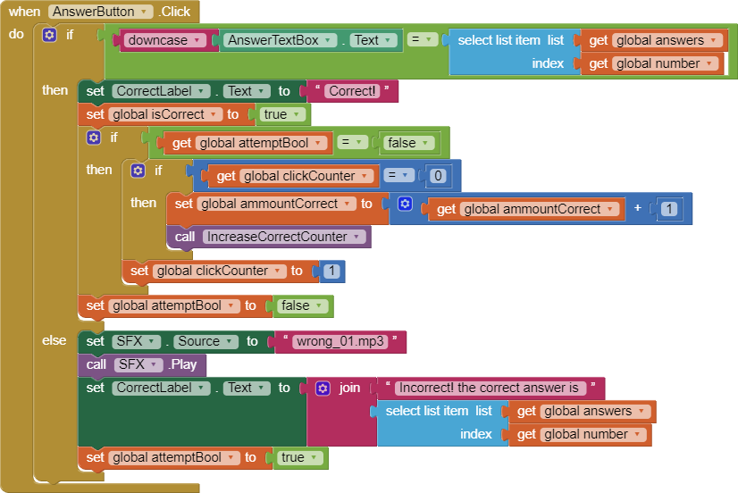
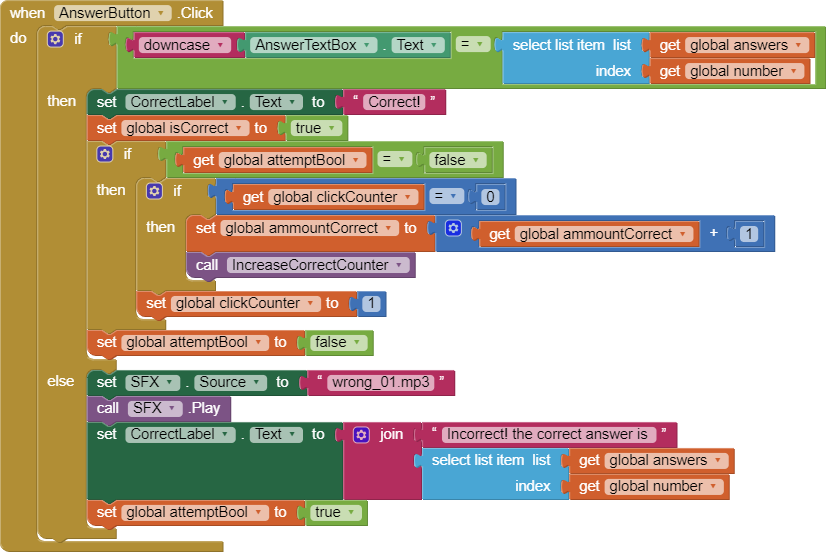

Chapter 5 Questions
Unit 5.2
1. Include a screenshot of an interesting design that your Logo app made and a screenshot of the code that created it. Press the power button and volume down at the same time to take a screenshot. Include this image and code in your write-up document, below.
2. Describe in your own words, with a specific example from Logo, how our choice of abstractions (commands) in this lesson provides us with the ability to solve problems that couldn't be solved with the abstractions (commands) used in Logo Part 1.
My choice of abstractions in the lesson help us solve problems we couldn't before since we have an increased arsenal of commands that we would use. Instead of limiting to only 90 degree turns, we can now make 45 degree turns which allow for an expanded range of shapes that we could make.
Unit 5.3
1.(POGIL) Define a pseudocode algorithm that will efficiently play the guessing game.
Set min to 0 Set middle to half of the max While middle is not the target If middle is higher than the target Set max to equal to middle Else Set min to equal to middle Set middle to half of min + max Print number
2.(POGIL) To guess a number between 1 and 100, what's the maximum number of guesses your algorithm would take?
The maximum number of guesses is 7 because 2^7 is 128 and 100 is less than 128.
3.(POGIL) To guess a number between 1 and 500, what's the maximum number of guesses your algorithm would take?
The maximum number of guesses is 9 because 2^9 is 512 and 500 is less than 500.
4.Suppose you have a deck of cards and you want to find the Ace of Spades. If the deck is shuffled, which is the best search algorithm to use and why?
Linear would be the best search algorithm because it can find cards that are randomized in a deck instead of ordered easily compared to binary.
5.Give an example of a search problem you encounter in everyday life. Does it use sequential, binary, or some other search algorithm?
A search problem that we encounter everyday is finding where you put and object. If you keep everything organized, it is binary search, but if you have a messy room, it is linear search.
Unit 5.4
1.Bubble and Merge Sort are referred to as comparison sorts because the values of the two pieces of data are compared during each step. Why are the radix and bucket sort not comparison sorts?
Radix and Helix sorts are not comparison sorts because they place each value depending on the value of the card. This is not comparing to other cards in the deck.
2.Which sort do you think would be the fastest if you had to sort more than one deck of cards? Why?
Bucket sort would be the fastest because it organizes each card into its own pile which makes it easier to sort once finished.
Unit 5.5
1.Describe the significance of the global variable index. How is indexing used with lists in this app?
The indexing used with lists in the app allows for us to use only one variable to select the item inside all the lists that we need.
2.Describe how parallel lists were used in this app. Why was the parallel structure of the lists necessary?
Parallel lists were used in the app to make it easier to grab all the information for a specific question and display it onto the screen.
3.Include screenshots of your code for exercises 2 and 3 from the Enhancements section.
 

4.Include a screenshot of the code that added your extra question (exercise 4). Explain why the code for the buttons worked without any changes after the addition of the extra question.
The code for buttons works even after adding more questions because a number global variabal cycles through the length of the list and displays the data onto the screen.
Unit 5.6
1.
2.
3.
4.
Unit 5.7
1.
2.
3.
Unit 5.8
1.
2
3.
Unit 5.9
1.
2.
3. The binary number system is base 2 and has 2 digits. The decimal number system is base 10 and has 10 digits. The octal system is base 8. How many digits does it have? What are they, starting at 0?
The octal system has 8 digits and they are from 0: 0, 1, 2, 3, 4, 5, 6, 7.
4. Suppose the number 523 is a base-8 octal number. What would its value be in decimal? In binary?
523 in octal would be 339 in decimal and 1 0101 0011 in binary.
5. Challenging: Convert the base-5 number 243 into decimal.
243 in base 5 is 73 in decimal.
Unit 2.10
1. (POGIL) Insert a screenshot of your Logicly diagram for the Exclusive-OR circuit below.

2 (POGIL) Consider these three things: The OR gate (i.e., the physical circuit), the Boolean OR function (as defined by its truth table), and the OR symbol. How would arrange them from most abstract to least abstract? And what criterion would you use to determine their order?
3. Consider these three things: A binary digit (e.g., 1 or 0), the flip-flop circuit diagram (), and the flip-flop circuit (i.e., the physical circuit). How would you arrange them from most abstract to least abstract and what criterion would you use to determine their order?
OR symbol, Boolean OR function, OR gate.The criterion we used is how easy to visualize or understand the purpose of each OR piece if it were to stand on its own.
Unit 2.11
1. What is a bit and what does it mean to say that "it's all just bits"? (Koan 1) Give examples of the things today that are stored in bits?
A bit is piece of data stored in the computer which displays everything that the user sees. When someone says it's all just bits, they mean that everything that a computer displays is created by bits. Some examples of things stored in bits are character, text files, and games.
2 Describe, in your own words, Moore's Law.
Moore's law is a law that predicts the speed of new processing chips to double every few years or so. So far, the trend has stayed similar to the law.
3. Give an example of how the digital explosion is "neither good nor bad" but has both positive and negative implications.
An example of positive and negative implications from the digital explosion is the increase in technology that helps treat patients at hospitals with ease compared to in the past. An example of a bad implication are the theft of data through breaching online security and giving the theif, very valuable and private information.
4. Find and summarize a news article that talks about the positive or negative impacts of a computing innovation. Is the technology itself positive or negative? Or have people used the technology in positive and/or negative ways? Don't forget to LINK to your article!
In my news article, it discusses the positives, and the negatives of computing innovation in society. The article mentions how computing innovation has helped lower the amount of blue collar jobs by creating machines that do the work for the farmers, but at the same time, the article describes te negatives of the innovation by stating how jobs are being replaced at a faster rate than we can create which leads to unemployment and how skills needed for jobs keep changing, forcing workers to learn them.
Here is the link to the news article.